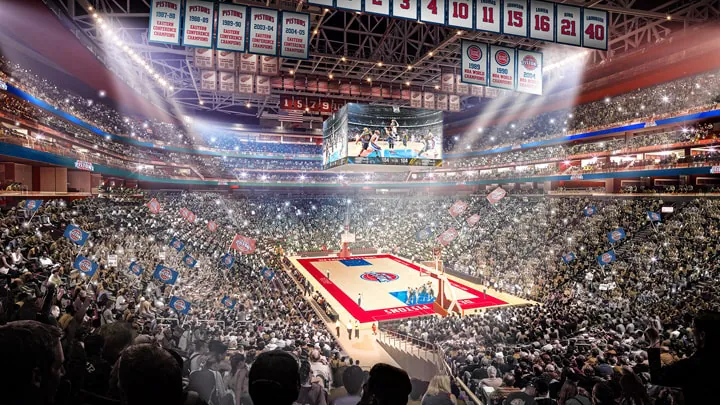

Detroit Pistons - O Detroit Pistons é uma franquia de basquete profissional da NBA, fundada em 1941 como Fort Wayne Zollner Pistons em Indiana. Em 1957, o time se mudou para Detroit, onde se estabeleceu como uma das equipes mais icônicas da liga. Conhecido por sua defesa física, o Pistons conquistou três títulos da NBA: dois na era "Bad Boys" com Isiah Thomas em 1989 e 1990, e mais um em 2004 com um elenco focado no jogo coletivo liderado por Chauncey Billups.
Atualmente, o Pistons está em fase de reconstrução, com jovens talentos como Cade Cunningham e Jaden Ivey, além de veteranos como Tobias Harris e Tim Hardaway Jr., buscando retomar a competitividade da equipe no Leste.
Elenco - Cade Cunningham (#2), Jaden Ivey (#23), Ausar Thompson (#20), Tobias Harris (#12), Jalen Duren (#0), Marcus Sasser (#5), Malik Beasley (#3), Ron Holland (#4), Simone Fontecchio (#8), Isaiah Stewart (#28).
Títulos NBA - 3 (1989, 1990 e 2004)
Títulos Conferência - 5 (1988, 1989, 1990, 2004 e 2005)
Estádio - Little Caesars Arena - (20.491)
